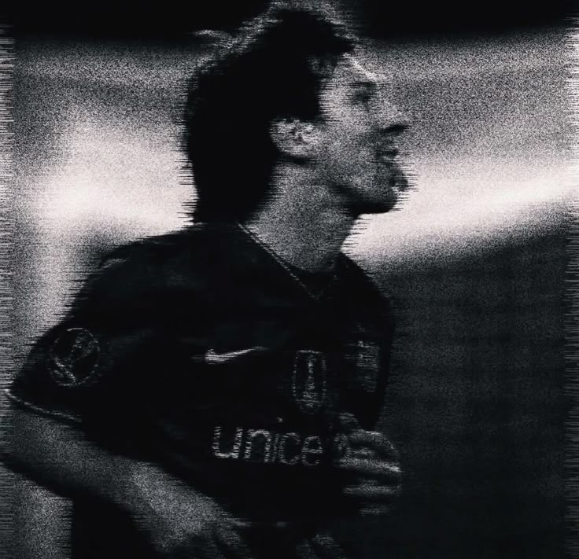
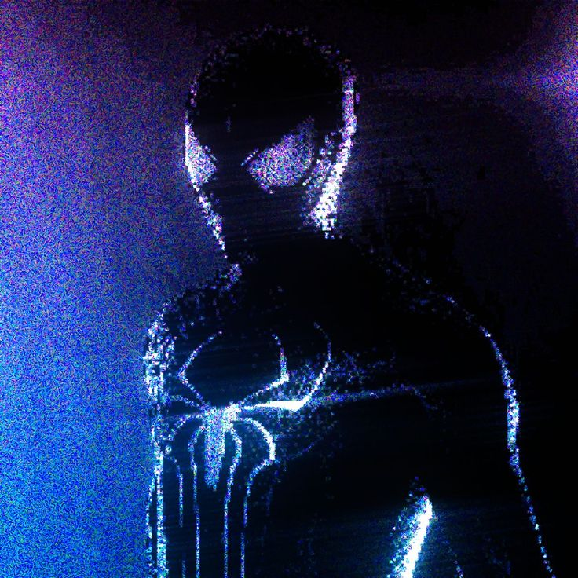

work
University of Idaho
Technical Support representative
(Aug 2026 - present)
personal & side projects
full stack · systems · algorithms
(ongoing)
projects
Chess Engine
wip
a chess engine compiled to webassembly. minimax, alpha-beta, and a bitboard representation that actually works. has a UI to watch the engine think.
a maze solver that benchmarks bfs, dfs, and a* across different densities. because reading about complexity is one thing, but measuring it is better.
DiffPal
wip
turning git diffs and PRs into documentation automatically. basically a pipeline to save me from writing docs manually.
recent posts
$ cat /dev/aesthetic



